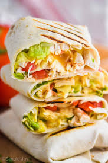

chickenwrap

A delicious chickenwrap recipe
the nice thing about this dish is that you can use this as a base for other dishes as well for example you could make a quesadilla, taco or cook white rice to eat with it you can be creative
ingredients
- chicken breast/thighs cut to small pieces
- yohgurt and lemon juice (acidity works wonders with chicken)
- your choice of sauce (i love chick fil a sauce)
- tortilla
- your choice of spices/seasonings (i use: cayenne pepper, tumeric, red chilli, ground cumin, paprika, italian seasoning, and ofcourse salt and pepper)
Steps
- marinade your chicken with yohgurt lemon juice and the spices make sure to mix it well and let it absorb the flavor for a few hours (a day is even better)
- in a hot pan add oil (a stainless steel pan works well to conduct heat)
- add chicken to the pan, untill the millard reaction occurs
- on another pan put your tortilla for a little bit
- add your sauce and any other ingredients you want to the tortilla
- add your chicken and wrap and enjoy your food!!
back to the home page